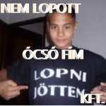
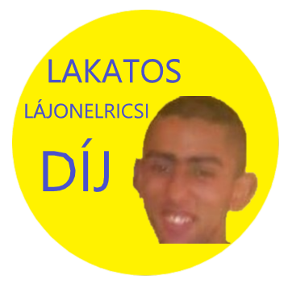

|

|
Elindult a Nyereményjáték! kattintson ide, hogy részt vegyen rajta.
A nyeremény 80kg vörösrész
Lakatos Lájonelricsi megkapta a "Nagy Lakatos Lájonelricsi-Díjat" ,mert kilopta az atombombából a vasat, ezzel hatástalanítva Kukutyin utolsó működő titkos bombáját. Képre kattintva tovább olvashatja a cikkünket.
A héten 107 kerékpárt loptak el Bihar megyében. Ugyanitt bicikli eladó.
Radics Péter, akarom mondani Gyurbán Viktor megalapítótta az OVNJDGYFSIJ pártot. Jelentése: Orbán Viktor nem jó de Gyurcsány Ferenc sem igazán jó.
Már több mint 6969 ember szavazott rájuk!
Napokon belül a Fidesz helyet Ő lesz a fő szponzorunk